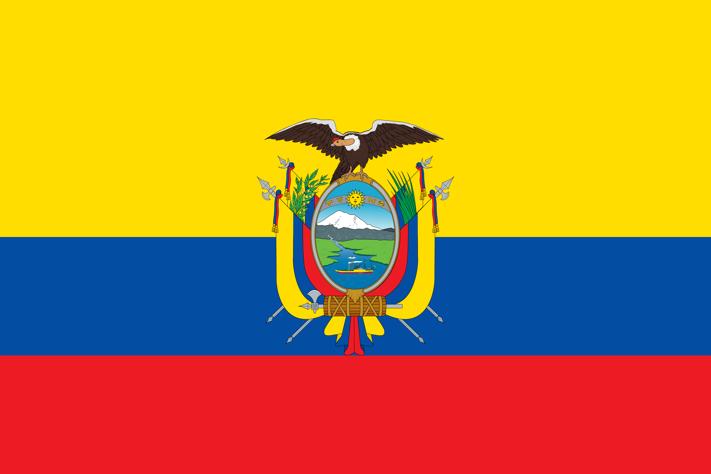

UEFA (EUROPA)

Chequia
La selección de Chequia es reconocida en el fútbol europeo por su tremenda rigurosidad táctica, su poderío físico y un juego aéreo temible. Son un equipo sumamente competitivo, capaz de plantarle cara a cualquier potencia mundial.
Curiosidades
- Heredera de la histórica selección de Checoslovaquia, la cual llegó a ser subcampeona del mundo en dos ocasiones (1934 y 1962).
- En su primera Eurocopa como nación independiente (Inglaterra 1996), sorprendió al planeta llegando de forma directa hasta la gran final.
- Ha sido la cuna de leyendas legendarias del fútbol mundial como Pavel Nedvěd (Balón de Oro 2003) y el guardameta Petr Čech.
- Su uniforme mantiene los colores azul, blanco y rojo, replicando de forma exacta la composición cromática de su bandera nacional.